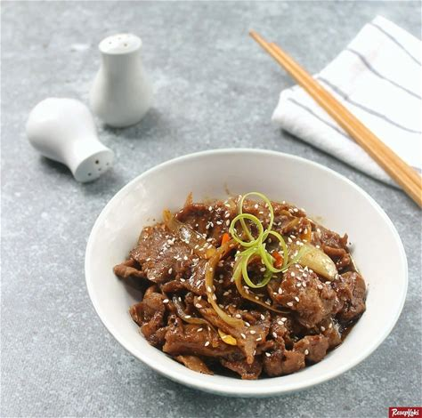

Resep Bulgogi makanan khas Korea Selatan

Bulgogi (bahasa Korea: 불 api, dan 고기 daging) adalah olahan daging asal Korea.
Daging yang digunakan antara lain daging sirloin atau bagian daging sapi pilihan.
Bumbu bulgogi adalah campuran kecap asin dan gula ditambah rempah lain bergantung pada resep dan daerah di Korea.
Sebelum dimakan, daun selada digunakan untuk membungkus bulgogi bersama kimchi, bawang putih, atau bumbu penyedap lain.
Berikut resep pembuatan bulgogi:
Bahan
- Daging, bagian has - 300 gram
- Bawang putih, cincang - 3 siung
- Bawang bombay, iris - 1 buah
- Jahe, iris - 1 ruas
- Saus tiram - 2 sdm
- Kecap manis - 1/2 sdm
- Kecap asin - 1/2 sdm
- Garam - 1/4 sdt
- Lada bubuk - 1/4 sdt
- Lada hitam - 1/4 sdt
- Minyak wijen - 1/2 sdt
- Minyak, untuk menumis - 1 sdm
- Air - 100 ml
- Wijen, sangrai - secukupnya
Cara Membuat
- Iris tipis daging.
- Bumbui daging dengan saus tiram, kecap manis, dan kecap asin. Aduk hingga daging terlumur rata dengan saus.
Simpan daging dalam kulkas selama 20 menit.
- Panaskan minyak.
Tumis bawang putih, bombay, dan jahe hingga harum.
- Masukkan lada bubuk dan lada hitam. Tumis kembali sebentar.
- Masukkan daging lalu aduk hingga berubah warna.
- Tuang air lalu aduk dan masak hingga air sedikit menyusut.
- Tuang minyak wijen dan masukkan garam. Aduk rata lalu angkat.
- Siap disajikan dengan taburan biji wijen.
Tips
- Jika ingin lebih pedas,
takaran lada bisa ditambahkan sesuai selera
- Gunakan wajan anti lengket agar bumbu tidak cepat gosong.
Restoran rekomendasi
lokasi